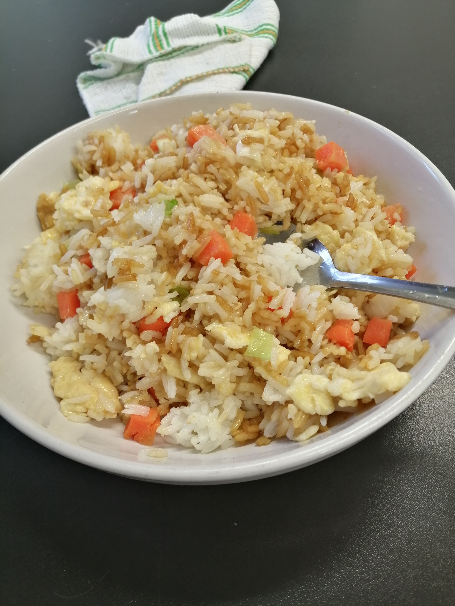

Egg fried rice

Description
Egg Fried Rice is a quick, simple dish made by stir-frying cooked rice with eggs and a few basic seasonings.
Ingredients
- Cooked rice (preferably cold, day-old rice)
- Eggs
- Cooking oil
- Soy sauce
- Spring onions or peas (optional)
Steps
- Heat the pan and add oil to a hot pan.
- Crack in the eggs, scramble them lightly, then push them to the side.
- Put the cooked rice into the pan and break up any clumps.
- Add soy sauce and stir everything together and fry for a few minutes until hot
- Add optional spring onions or vegetables, stir once more, and serve.
Home